Shoot the pictures
My first photos were of the kitchen and living room. I later took photos of a church because I was having trouble getting the kitchen views to line up.
Set 01 · Kitchen
The kitchen photos overlap around the microwave, stove, and countertop.


Set 02 · Room
The second set covers the boxes, orange cushion, and couch.


Set 03 · Church
For the church pair, I could use corners in the stonework and windows to find the same spots in both photos.


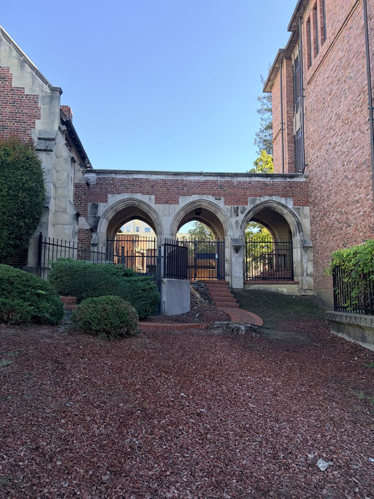
Recover homographies
I used a 3 × 3 matrix H to map points from the first photo to the second. I set the bottom-right entry to 1, leaving eight values to solve for.
Solving for H
Each matching point pair gives two equations. I put these into Ah = b and solved for h with numpy.linalg.lstsq, using the pixel coordinates directly.
I clicked eight points in each photo, keeping the order the same so each point matched the same feature. That gave me 16 equations for eight unknowns. I used resized images with a longest side of 1200 pixels. The dots and matrices below use those coordinates.
Kitchen · images 1 and 2

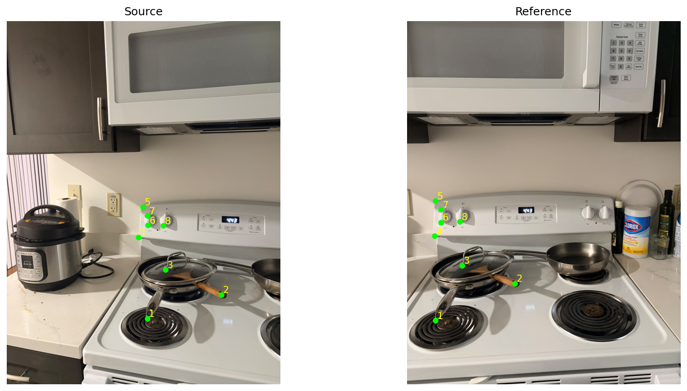
Church · images 2 and 3

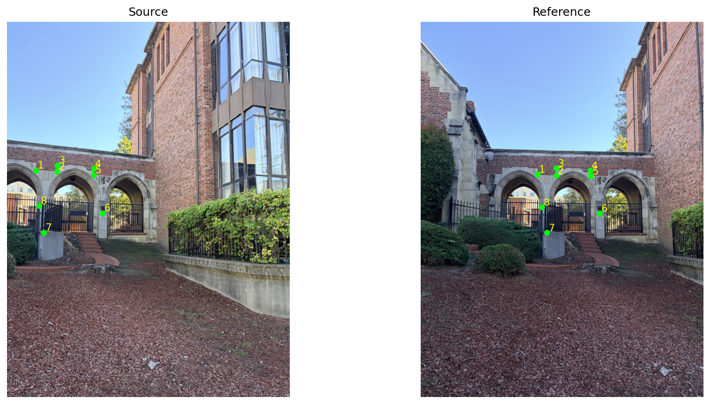
Room · images 1 and 3

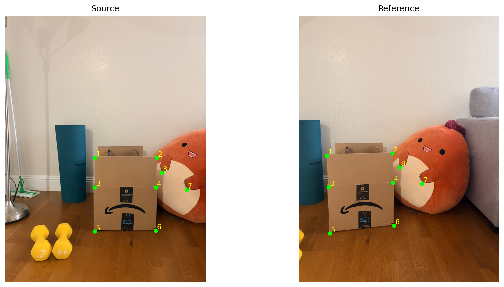
Warp & rectify
For each output pixel, I used H⁻¹ to find where to sample the input image. I found the output bounds by transforming the four image corners. A mask tracks which output pixels fall inside the input image, so empty areas are kept separate from actual black pixels.
Two interpolation methods
| Method | Sampling | Expected trade-off |
|---|---|---|
| Nearest neighbor | One rounded source pixel | Less arithmetic; can produce jagged edges and blocky detail. |
| Bilinear | Weighted average of four neighbors | Smoother edges; more arithmetic and possible softening of fine detail. |
Both methods use loops over the output pixels and NumPy for the coordinate calculations. The rectifications shown below were generated with the earlier implementation. Timings need to be measured again with the current functions.
Rectification
For rectification, I used the stove control panel and the front of a cardboard box. The four corners were marked in top-left, top-right, bottom-right, bottom-left order and mapped to a rectangle.
Stove control panel


Cardboard box front


Nearest neighbor looks blockier around the lettering and the curved box logo. Bilinear gives smoother edges but also blurs some detail. I enlarged the same crop from each result without smoothing so the pixel differences stay visible. The target proportions are approximate; I did not have measurements of either rectangle.
Blend image mosaics
I warped each photo separately, then used its (xmin, ymin) offset to place it on a canvas large enough for both views. In the overlap, I averaged the colors with larger weights away from the image edges.
Choose the reference frameKeep the second photo fixed and warp the first into its coordinates.
Build one canvasFind the combined bounds from the warped images and their origins. Offset each image by its origin minus the canvas origin.
Feather the overlapWarp a weight map with each image, add the weighted colors, and divide by the total weight.
I used the masks to exclude empty pixels from the average. Blending makes the seams less abrupt, but it does not fix misaligned objects.
Kitchen · images 1 and 2


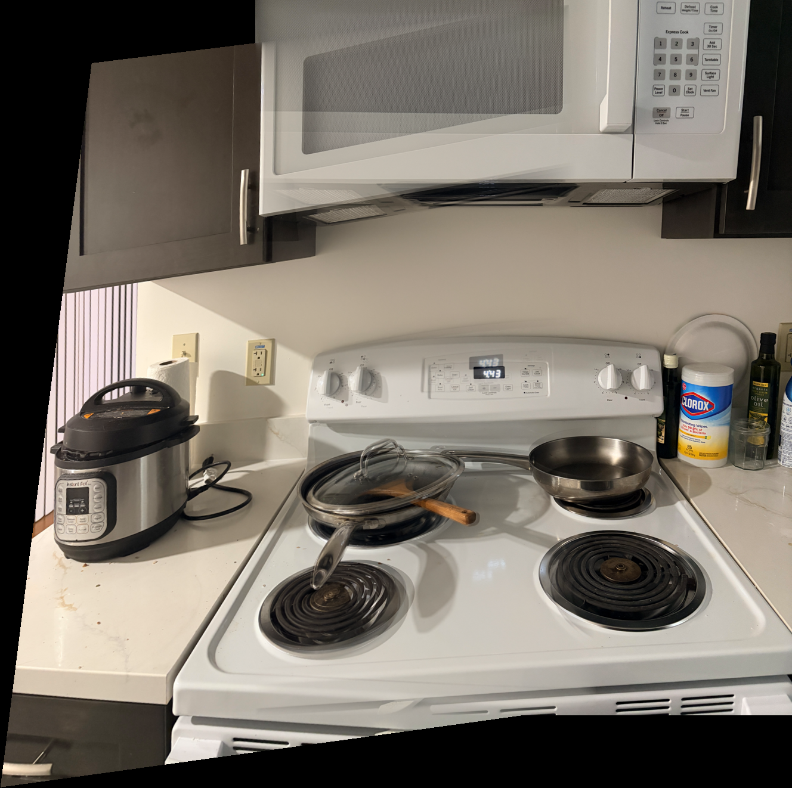
Church · images 2 and 3

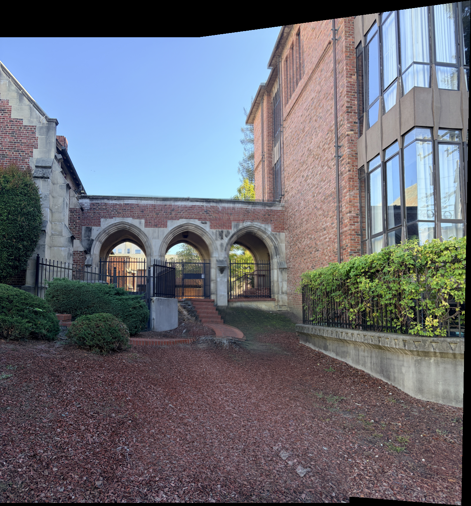
Room · images 1 and 3


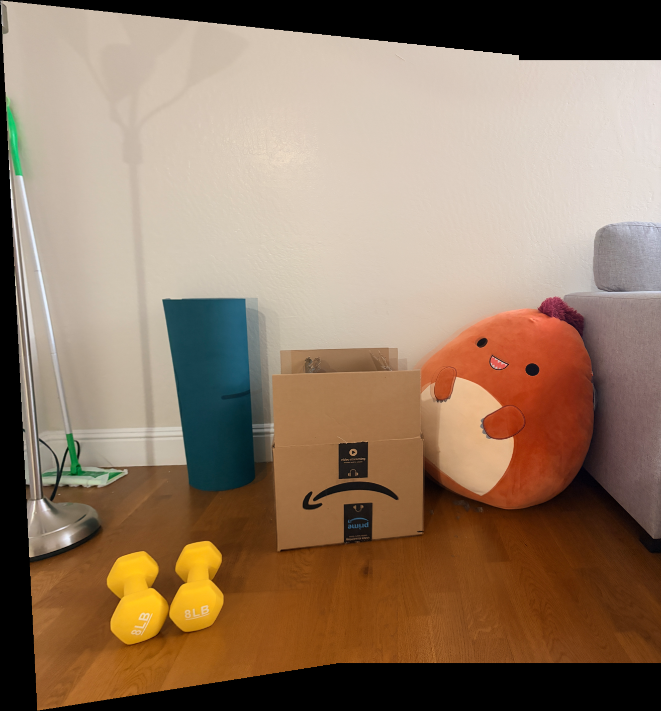
The manual mosaics still have doubled edges around the microwave and church wall. Averaging the colors makes these overlaps softer, but the edges are still in different places. The black areas are where neither photo has pixels.
Feature matching for autostitching
For Part B, I used the same photo pairs but let the code find the matching points. I kept the warping and blending from Part A so I could compare the two ways of choosing matches.
Harris → ANMS → descriptors → matching → RANSAC → mosaic
Harris corners & ANMS
I ran the provided Harris detector on the grayscale image at one scale. It skips corners close to the border. It found so many points on the kitchen photo that the microwave almost looks filled in with green dots.
For each corner, I found the distance to the nearest corner whose response was strong enough to suppress it. I kept the 500 largest distances, using the response strength to break ties. This helped avoid keeping too many points in the same small area.

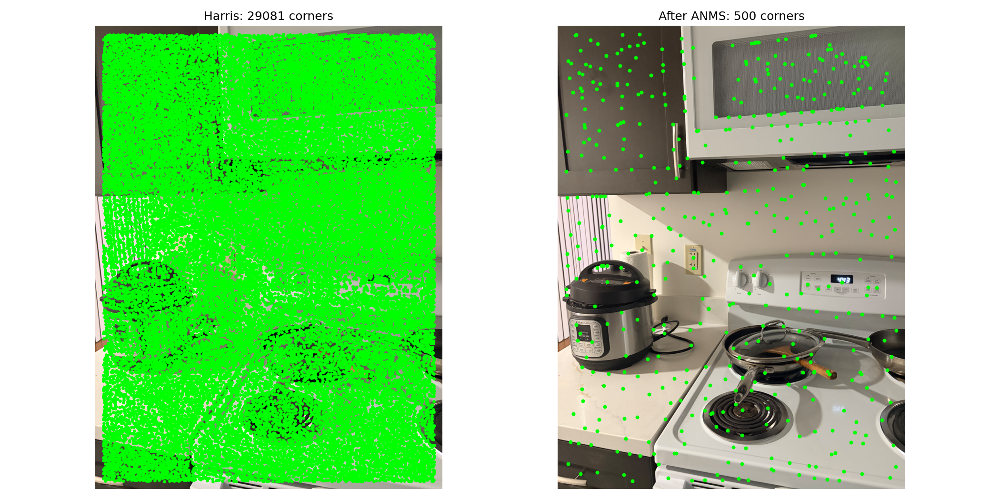
The difference is easier to see on the right: there are fewer points on the microwave, and points are spread across the rest of the kitchen too.
Feature descriptors
I blurred the grayscale image with σ = 2 and took a 40 × 40 patch around each corner. I sampled every fifth pixel to get an 8 × 8 patch, then subtracted its mean and divided by its standard deviation. I skipped patches with almost no variation.

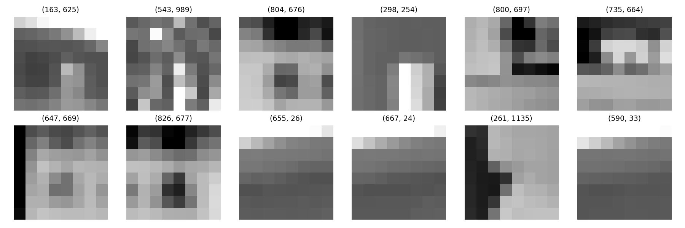
The descriptors look blocky because they summarize a much larger patch. Some show an edge or corner, while others are mostly a brightness gradient. I kept them axis-aligned and did not add rotation or scale invariance.
Match features
I flattened each patch into 64 values and compared it with every descriptor in the other photo using Euclidean distance. I kept a match when the closest descriptor was less than 0.7 times the distance of the second-closest one.
The ratio test removes ambiguous matches, but some wrong ones still get through. The top panel shows the matches after this test. The bottom shows which ones survived RANSAC.
Kitchen · images 1 and 2

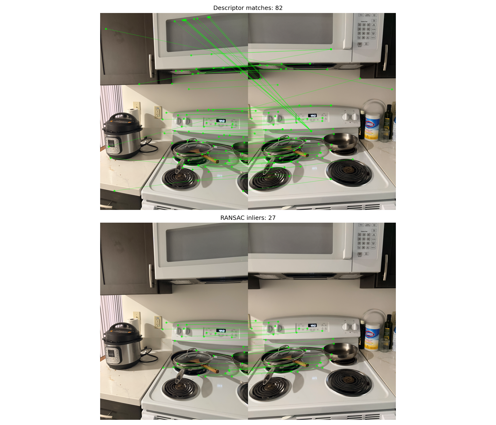
Church · images 2 and 3

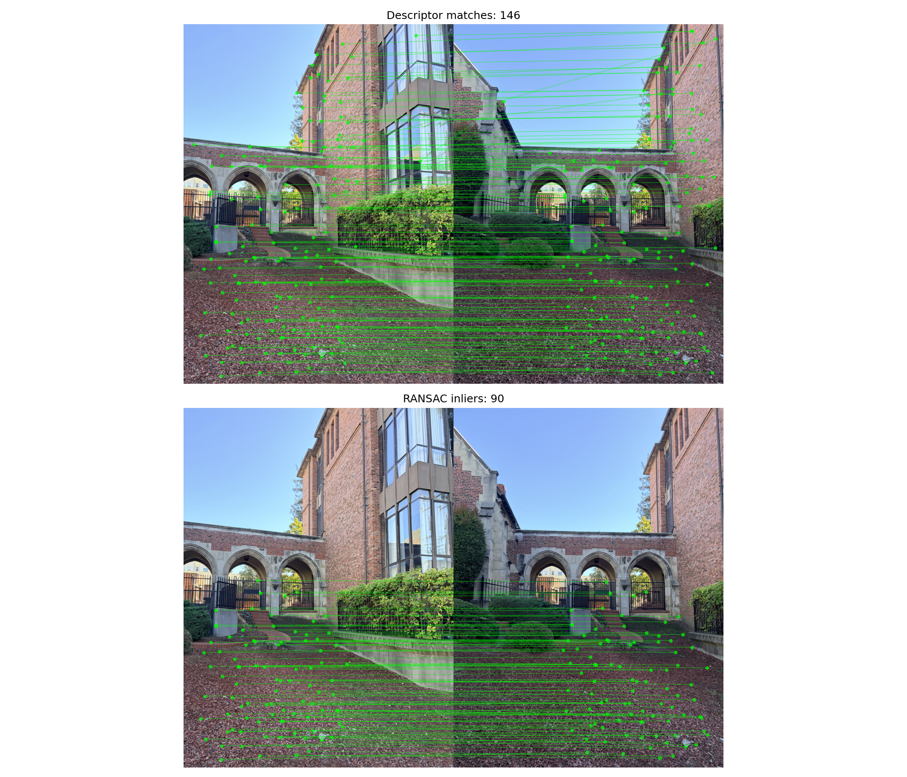
Room · images 1 and 3

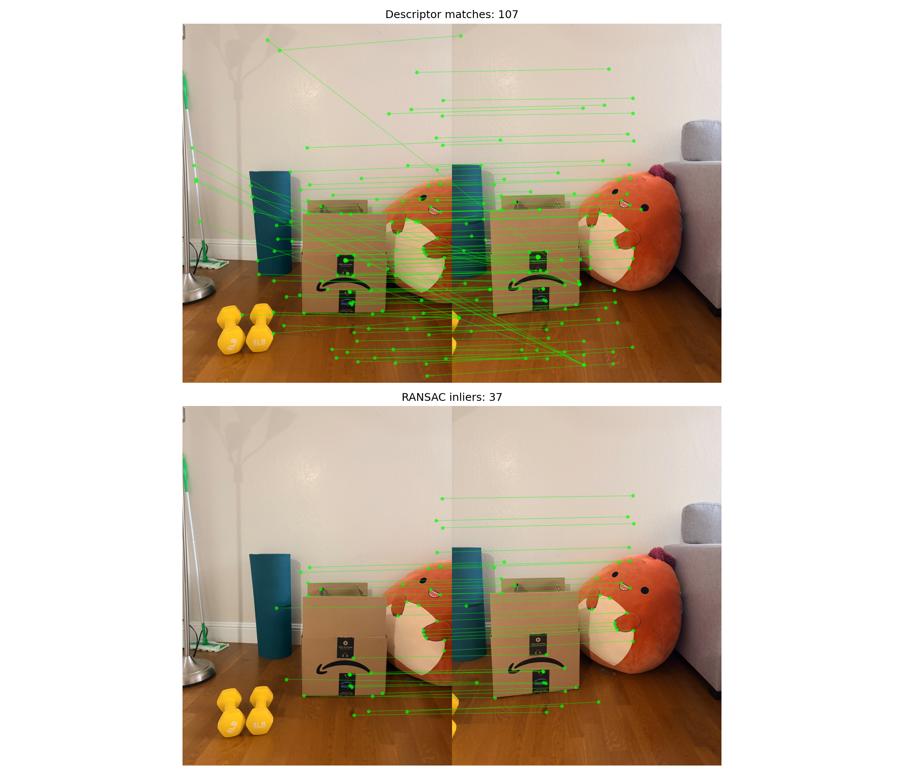
RANSAC & automatic mosaics
I implemented four-point RANSAC with 2,000 trials and a fixed random seed. Each trial samples four matches, rejects samples with collinear points, and estimates H using computeH. A match counts as an inlier if its transformed source point lands within 3 pixels of the target. I keep the model with the most inliers and recompute H using that full inlier set.
Once I had H, I used the same bilinear warping and blending as in Part A. I kept the second photo fixed and blended the first into it.
On the left are the results from my eight clicked points. On the right are the automatic results. I used the same blending for both. Their shapes differ because the two methods estimated different homographies.
Kitchen · images 1 and 2

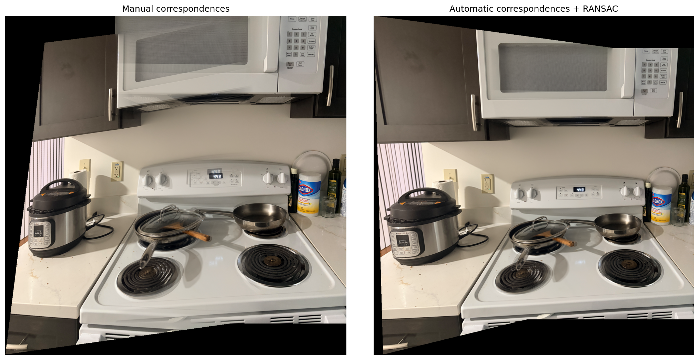
My manual kitchen result has more obvious doubling around the microwave and stove controls. The automatic version looks better there, though the cookware still looks soft in the overlap.

Church · images 2 and 3


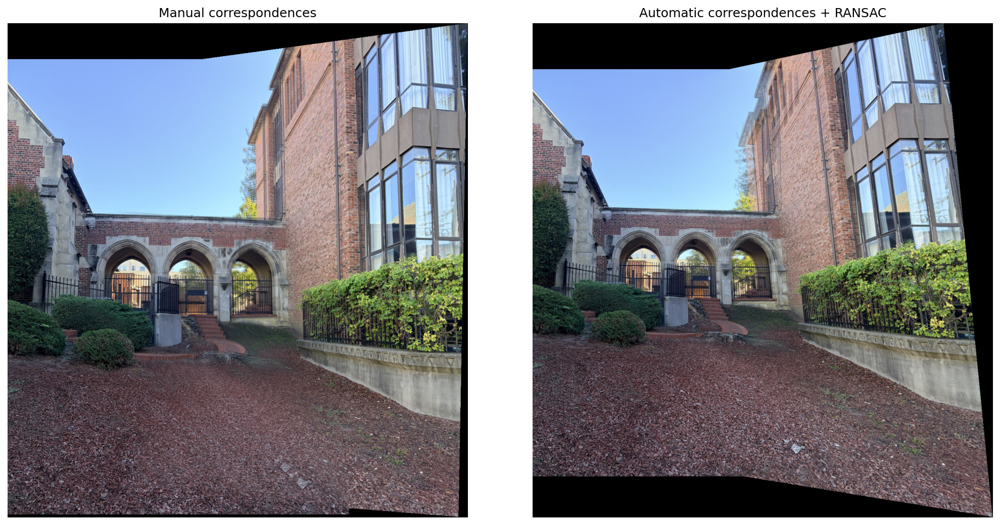
The arches line up better in the automatic church result. My manual version still has doubled edges along the wall, and neither version lines up all the windows perfectly.

Room · images 1 and 3

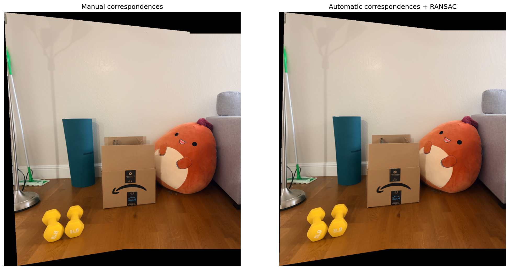
The room results look much closer to each other. Both capture the boxes, mat, and cushion, although some details on the boxes and floor are still soft.

What I noticed
Picking the same points accurately was harder than I expected, especially in the kitchen. I redid that manual pair and then tried the church photos. The automatic results were better in those comparisons, but they still have ghosting. Small camera movements and objects at different depths could contribute to that. Blending helped with the seams, but it could not move the doubled edges back together.
These are three image pairs from the kitchen, church, and room. I left the black borders in so the full warped views are visible.